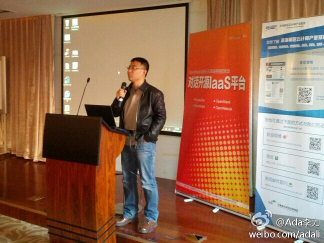
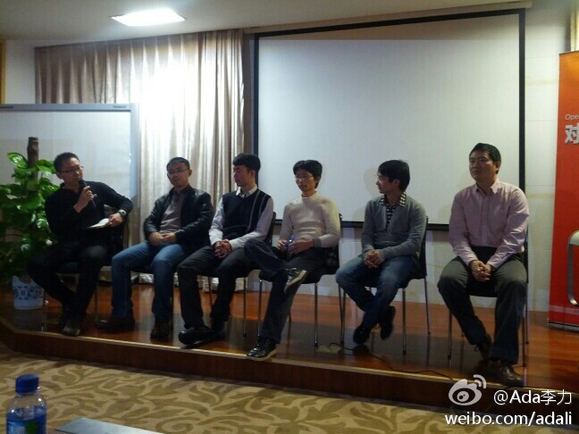

#OpenStack#中国行天津站，@田亮-云计算 所在公司用两个月的时间开发了基于OpenStack的针对公有云管理的系统，经验有两几点：选用自己最熟悉的框架，快速迭代，他们用Java; 计费尽量采用包月包年制，按需计费太复杂。
#OpenStack#中国行天津站 @lee-xh 李学辉提到了国内Cloudstack的商业应用，包括园区，政府及一些运营商，国外的商业应用更多。在Apache项目中还处于孵化期，其中的中文邮件组是特色。
#OpenStack#中国行天津站。来自中国移动研究院的@Marshal-Liu 刘军卫自称码农，说只谈OpenNebula的技术，而对于和其它平台的比较，他说用数据说话。不过，来自OpenStack的压力，让OpenNebula这个源自欧洲的项目加快了发布频率。 
#OpenStack#中国行天津站，介绍桉树的是新任客户成就总监@qyjohn_ 蒋清野 他也是其它讲师眼里的资深云计算专家。本来是要Demo下如何快速用桉树搭建系统，结果投影仪罢工。多出来的时间就都贡献给接下来的四个开源IaaS的PK环节。
#OpenStack#中国行天津站。最后也是最重要的环节panel, 贴合了活动的副标题： 对话开源IaaS平台。由CSDN云频道记者包研主持，从左至右 @CSDN包研 @Marshal-Liu @田亮-云计算 @qyjohn_ @程辉 @lee-xh 